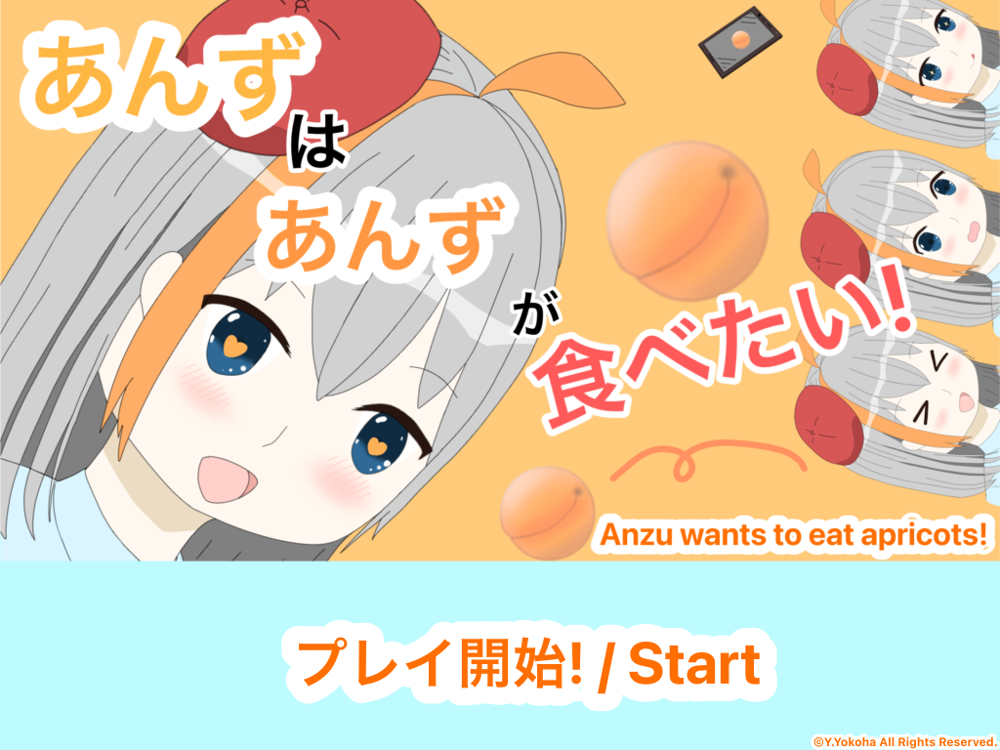
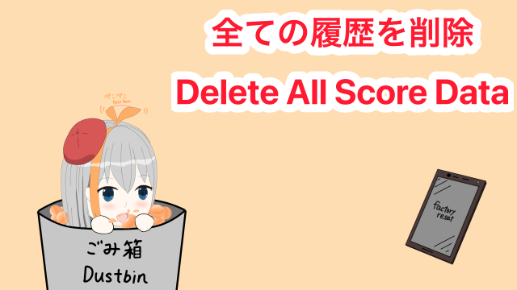

あんず歴(TotalPlays):
0回/times
べすとあんずスコア(High Score):
0コ/apricot(s)
やりこみレベル(Appendix Counts):
0段階/grade
現バージョンの獲得可能やりこみレベル/The Current highest possible appendix counts: 7段階/grade
やりこみレベルは何か特定の動作を行った場合に上昇します。/The appendix counts is increased when some specific action is performed.
杏子ちゃんのイラスト:©Y.Yokoha All Rights Reserved.
※製作者は杏を食べたことがありません。
残りあと 30秒
食べたあんず: 0コ
あんずはあんずが食べたい! Rev.1.1
音量を上げすぎると難聴の原因となる場合がございますので、ご注意下さい。
それでは、下のボタンをクリックしてゲームをお楽しみください!
This game makes sounds. Please pay attention to the volume and be careful not to turn up the volume too high as this may cause hearing loss.
Now, click the button below and enjoy the game!
ゲーム履歴データ(実績データ)を削除(リセット)したい方は下へスクロールし、ボタン(画像)をクリックしてください。
誤タップ防止のため、ボタンを下に下げてあります。
If you want to clear (or reset) your game history data (achievement data), scroll down and click the button (image).
The button is lowered to prevent accidental tapping.
ボタンを押すとすぐにデータ消去が始まります。ご注意ください。
Data erasure will begin as soon as the button is pressed. Please be careful.
©2024 Y.Yokoha All Rights Reserved.
このゲームでは、横茶横葉利用規約内で許可されている項目のほかに、録画、共有が許可されています。ご不明な点等ございましたらお気軽に製作者SNSまでご連絡下さい!
制作者連絡用X(旧Twitter)[確認遅めです..] 制作者メインX(旧Twitter) yokochayokoha@duck.com